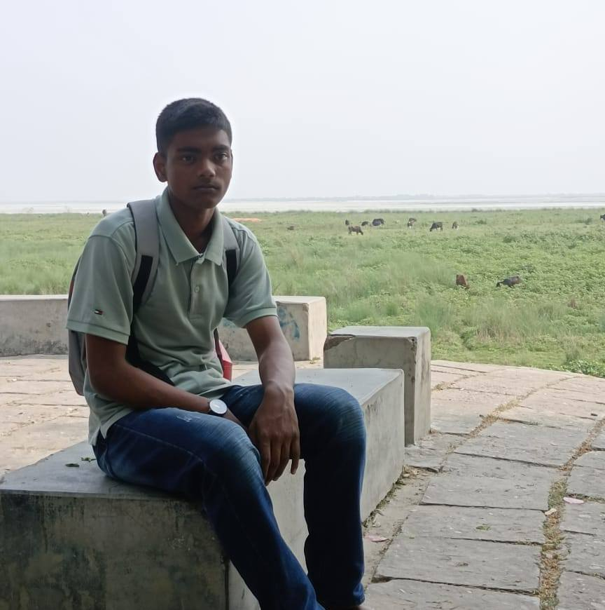
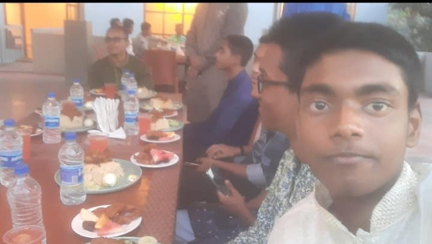
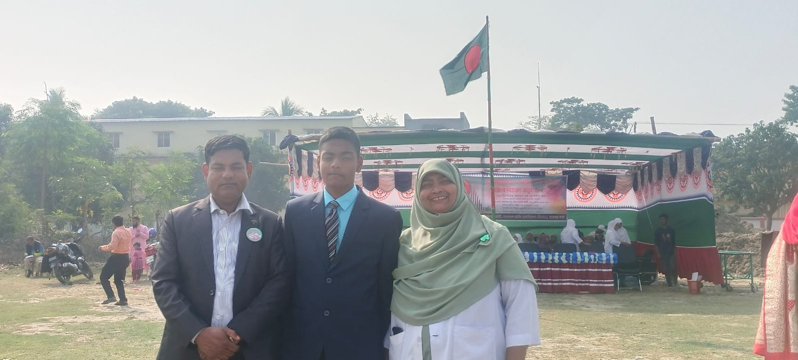
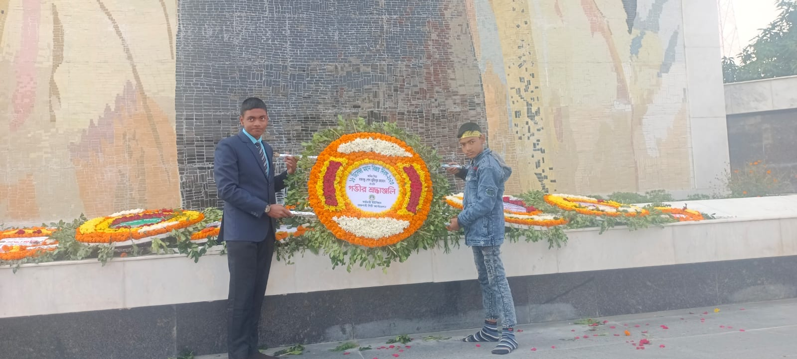
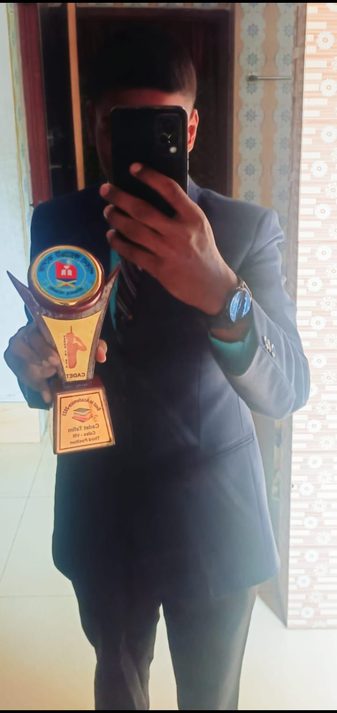
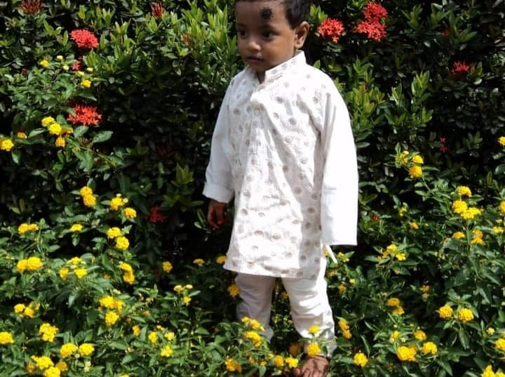

And he is Mr. Tafim!

গাঞ্জা খান,পরিবেশ বাঁচান
-তাফিম
Mr. Tafim's full name is Tanvir Ahmed Tafim.He is 14 years old.Unfortunately he is a nigga and "ganja" as well.He has 14 "Ganja" factory,13 cocain
factory and 3 cigarette factory.He is the elder son of Mr.Aynal hoque.Mr.Aynal hoque is a Poet.Mr. Tafim got many national prizes for his contribution
in many sectors in "Yaba" industries.He is doing PHD is Uganda,South Africa,Mayanmar in Philosophy.He is a poet as well.Some of his poems are "আমি
কালো আমি মাণিক", "কালো নয়ন মণি" , "ব্ল্যাক ম্যান মিস্ট্রি" , "কালো-ধোলো মিশ্রন" etc.His "কালো নয়ন মণি"got national award in 2018.He has a
son and a daughter.He also has a major contribution in NASA.

  Mr. Tafim with his colleagues Mr. Tafim with his parents Mr.Tafim with the president of USA
 
Mr.Tafim got "সেরা চুদির ভাই"
award Mr. Tafim in "পাটক্ষেত"